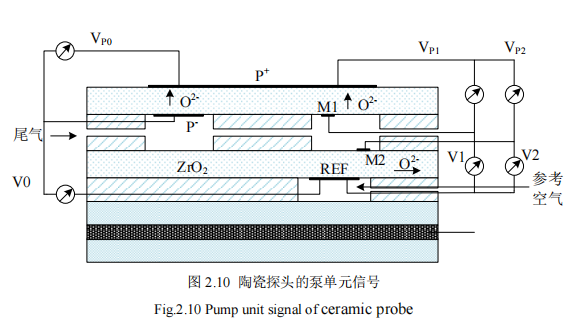

LTCC 传感器产品线
基于 LTCC（低温共烧陶瓷）工艺，公司推出气体传感器与压力传感器解决方案，涵盖 LC 无源无线气体传感结构、多层 LTCC 微流控检测模组及陶瓷扩散膜电化学敏感探头等方向，适用于气体检测、微流控分析及汽车尾气等应用场景。欢迎联系我们获取详细技术方案与定制开发支持。
LTCC 气体传感器
LC 无源无线气体传感器 · 螺旋电感与叉指电容一体化结构

- 采用 LTCC 工艺集成螺旋电感与叉指电容，构成 LC 谐振式气体敏感单元
- 支持无源无线检测方案，可与读出头线圈耦合实现远程激励与信号读取
- 结构小型化，适合嵌入式气体检测与实验室传感研究
- 可根据敏感膜材料与目标气体类型进行定制设计
LTCC 压力传感器
多层 LTCC 叠层 · 微流道与电极一体化封装


- 多层 LTCC 陶瓷叠层结构，集成缓冲池、微流道（约 1 mm）及电极腔体
- 含工作电极、对电极、参比电极（Ag/AgCl、Au 等）及陶瓷扩散膜气体入口
- 模组化设计，含气路接口与电路引出，便于系统集成
- 适用于液体微流控、压力/电化学检测等应用开发
陶瓷敏感探头
适用于电化学气体检测的陶瓷扩散膜探头


- 基于 ZrO₂ 等陶瓷电解质层的多层探头结构，支持 O²⁻ 离子传导
- 适用于尾气检测、参考空气通道等电化学传感场景
- 芯片级小型封装，可与泵单元及信号采集电路配合使用
- 支持按客户检测指标与封装要求进行定制